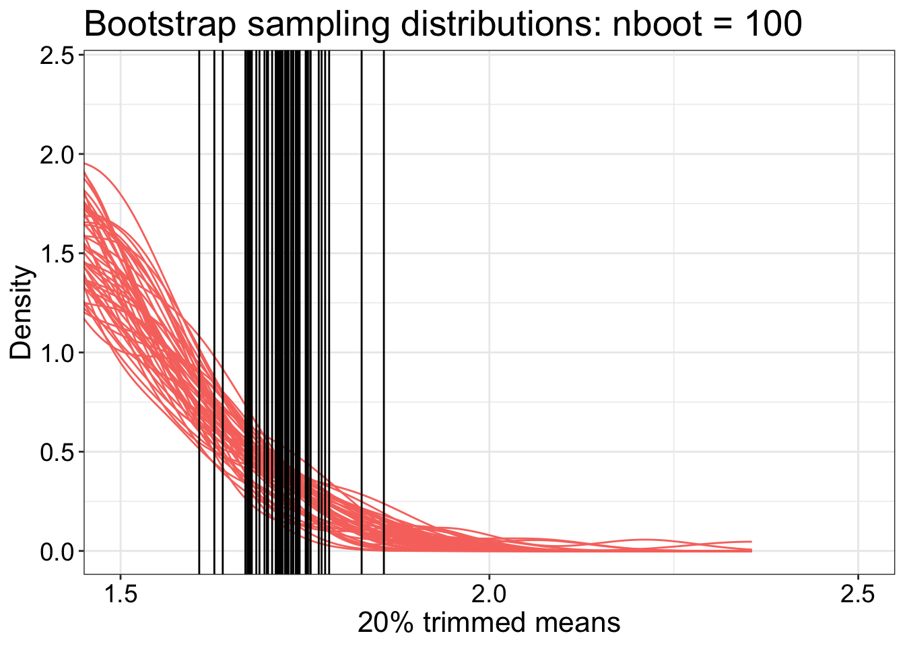
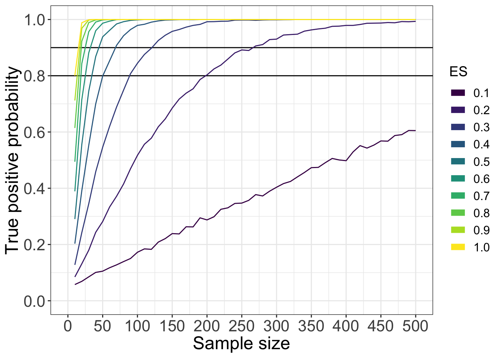

library(ggplot2)
library(tibble)
library(tidyr)
source("./code/theme_gar.txt")
source("./code/Rallfun-v35-simplified.txt")
library(beepr) # for little auditory rewards :)We compute multiple bootstrap sampling distributions for the same sample.
set.seed(1)
n <- 30 # sample size
nsim <- 50 # number of bootstrap distributions
nboot <- 100 # number of bootstrap samples
tr <- 0.2 # amount of trimming
samp <- rlnorm(n) # unique sample from lognormal distribution
boot.samp.dist <- matrix(0, nrow = nsim, ncol = nboot)
boot.q975 <- vector(mode = "numeric", length = nsim)
for(iter in 1:nsim){ # get bootstrap samples multiple times
boot.samp.dist[iter,] <- apply(matrix(sample(samp, n*nboot, replace = TRUE), nrow = nboot), 1, mean, trim = tr)
boot.q975[iter] <- quantile(boot.samp.dist[iter,], probs = 0.975) # get upper bound of confidence interval
}
# boot.samp.dist[iter,] = nsim (50) bootstrap sampling distributions
# boot.q975[iter] = nsim (50) upper bounds of the percentile bootstrap confidence intervals. These upper bounds are shown as black vertical lines in the next chunk `Superimpose 0.975 quantile`.
p <- ggplot(tibble(x = as.vector(boot.samp.dist),
samp = factor(rep(1:nsim, nboot))),
aes(x = x)) + theme_gar +
# bootstrap distributions from nsim samples
geom_line(aes(group = samp, colour = "bootstrap samples"), stat = "density", size = 0.5) +
coord_cartesian(xlim = c(0.5, 3)) +
scale_x_continuous(breaks = seq(0.5, 3, 0.5)) +
theme(legend.position = "none") +
labs(x = "20% trimmed means", y = "Density") +
guides(colour = guide_legend(override.aes = list(size = 3))) +
ggtitle("Bootstrap sampling distributions: nboot = 100")
pdf.q <- tibble(q = boot.q975)
ggplot(tibble(x = as.vector(boot.samp.dist),
samp = factor(rep(1:nsim, nboot))),
aes(x = x)) + theme_gar +
# bootstrap distributions from nsim samples
geom_line(aes(group = samp, colour = "bootstrap samples"), stat = "density", size = 0.5) +
geom_vline(data = df.q, mapping=aes(xintercept = q)) +
coord_cartesian(xlim = c(1.5, 2.5)) +
scale_x_continuous(breaks = seq(0.5, 3, 0.5)) +
theme(legend.position = "none") +
labs(x = "20% trimmed means", y = "Density") +
guides(colour = guide_legend(override.aes = list(size = 3))) +
ggtitle("Bootstrap sampling distributions: nboot = 100") 
set.seed(1)
n <- 30 # sample size
nsim <- 50 # number of bootstrap distributions
nboot <- 1000 # number of bootstrap samples
tr <- 0.2 # amount of trimming
samp <- rlnorm(n) # unique sample from lognormal distribution
boot.samp.dist <- matrix(0, nrow = nsim, ncol = nboot)
boot.q975 <- vector(mode = "numeric", length = nsim)
for(iter in 1:nsim){ # get bootstrap samples multiple times
boot.samp.dist[iter,] <- apply(matrix(sample(samp, n*nboot, replace = TRUE), nrow = nboot), 1, mean, trim = tr)
boot.q975[iter] <- quantile(boot.samp.dist[iter,], probs = 0.975) # get upper bound of confidence interval
}
# boot.samp.dist[iter,] = nsim (50) bootstrap sampling distributions
# boot.q975[iter] = nsim (50) upper bounds of the percentile bootstrap confidence intervals. These upper bounds are shown as black vertical lines in the next chunk `Superimpose 0.975 quantile`.
p <- ggplot(tibble(x = as.vector(boot.samp.dist),
samp = factor(rep(1:nsim, nboot))),
aes(x = x)) + theme_gar +
# bootstrap distributions from nsim samples
geom_line(aes(group = samp, colour = "bootstrap samples"), stat = "density", size = 0.5) +
coord_cartesian(xlim = c(0.5, 3)) +
scale_x_continuous(breaks = seq(0.5, 3, 0.5)) +
theme(legend.position = "none") +
labs(x = "20% trimmed means", y = "Density") +
guides(colour = guide_legend(override.aes = list(size = 3))) +
ggtitle("Bootstrap sampling distributions: nboot = 1000")
pdf.q <- tibble(q = boot.q975)
ggplot(tibble(x = as.vector(boot.samp.dist),
samp = factor(rep(1:nsim, nboot))),
aes(x = x)) + theme_gar +
# bootstrap distributions from nsim samples
geom_line(aes(group = samp, colour = "bootstrap samples"), stat = "density", size = 0.5) +
geom_vline(data = df.q, mapping=aes(xintercept = q)) +
coord_cartesian(xlim = c(1.5, 2.5)) +
scale_x_continuous(breaks = seq(0.5, 3, 0.5)) +
theme(legend.position = "none") +
labs(x = "20% trimmed means", y = "Density") +
guides(colour = guide_legend(override.aes = list(size = 3))) +
ggtitle("Bootstrap sampling distributions: nboot = 1000") set.seed(1)
n <- 30 # sample size
nsim <- 50 # number of bootstrap distributions
nboot <- 10000 # number of bootstrap samples
tr <- 0.2 # amount of trimming
samp <- rlnorm(n) # unique sample from lognormal distribution
boot.samp.dist <- matrix(0, nrow = nsim, ncol = nboot)
boot.q975 <- vector(mode = "numeric", length = nsim)
for(iter in 1:nsim){ # get bootstrap samples multiple times
boot.samp.dist[iter,] <- apply(matrix(sample(samp, n*nboot, replace = TRUE), nrow = nboot), 1, mean, trim = tr)
boot.q975[iter] <- quantile(boot.samp.dist[iter,], probs = 0.975) # get upper bound of confidence interval
}
# boot.samp.dist[iter,] = nsim (50) bootstrap sampling distributions
# boot.q975[iter] = nsim (50) upper bounds of the percentile bootstrap confidence intervals. These upper bounds are shown as black vertical lines in the next chunk `Superimpose 0.975 quantile`.
p <- ggplot(tibble(x = as.vector(boot.samp.dist),
samp = factor(rep(1:nsim, nboot))),
aes(x = x)) + theme_gar +
# bootstrap distributions from nsim samples
geom_line(aes(group = samp, colour = "bootstrap samples"), stat = "density", size = 0.5) +
coord_cartesian(xlim = c(0.5, 3)) +
scale_x_continuous(breaks = seq(0.5, 3, 0.5)) +
theme(legend.position = "none") +
labs(x = "20% trimmed means", y = "Density") +
guides(colour = guide_legend(override.aes = list(size = 3))) +
ggtitle("Bootstrap sampling distributions: nboot = 10000")
pdf.q <- tibble(q = boot.q975)
ggplot(tibble(x = as.vector(boot.samp.dist),
samp = factor(rep(1:nsim, nboot))),
aes(x = x)) + theme_gar +
# bootstrap distributions from nsim samples
geom_line(aes(group = samp, colour = "bootstrap samples"), stat = "density", size = 0.5) +
geom_vline(data = df.q, mapping=aes(xintercept = q)) +
coord_cartesian(xlim = c(1.5, 2.5)) +
scale_x_continuous(breaks = seq(0.5, 3, 0.5)) +
theme(legend.position = "none") +
labs(x = "20% trimmed means", y = "Density") +
guides(colour = guide_legend(override.aes = list(size = 3))) +
ggtitle("Bootstrap sampling distributions: nboot = 1000") Example of a simple simulation to check the probability coverage of a confidence interval method. The simulation has 2,000 iterations. Increasing this number would lead to more precise results. For a simple test, 10,000 iterations or more could be used (and is often recommended or expected in the literature). For more complex applications, time might be a constraint.
The sample size is 30, which seems reasonably high for a psychology experiment. A more systematic simulation should include sample size as a parameter.
The population is lognormal and is generated outside the simulation loop. An alternative is to generate the random numbers directly inside the loop by using samp <- rlnorm(nsamp). The lognormal distribution is one of many skewed mathematical distributions. It serves to illustrate what can happen when sampling from skewed distributions in general. Other shapes could be used to, if some domain specific information is available. For instance, ex-Gaussian distributions do a good job at capturing the shape of reaction time distributions.
The population means and trimmed means differ and are estimated independently in the simulation: the sample mean is used to make inferences about the population mean, whereas the sample trimmed mean is used to make inferences about the population trimmed mean.
DO NOT RUN THE NEXT CHUNK UNLESS YOU’RE PLANNING A BREAK!
set.seed(666) # reproducible results
nsim <- 2000 # simulation iterations
nsamp <- 30 # sample size
nboot <- 500 # could use more
pop <- rlnorm(1000000) # define population
pop.m <- mean(pop) # population mean
pop.tm <- mean(pop, trim = 0.2) # population 20% trimmed mean
ci.coverage <- matrix(0, nrow = nsim, ncol = 3) # declare matrix of results
for(S in 1:nsim){ # simulation loop
if(S == 1){
print(paste("iteration",S,"/",nsim))
beep(2)
}
if(S %% 500 == 0){
print(paste("iteration",S,"/",nsim))
beep(2)
}
samp <- sample(pop, nsamp, replace = TRUE) # random sample from population
# Mean + t-test
ci <- t.test(samp, mu = pop.m)$conf.int # standard t-test equation
ci.coverage[S,1] <- ci[1]<pop.m && ci[2]>pop.m # CI includes population value?
# Mean + bootstrap-t
ci <- trimcibt(samp,tr=0,alpha=.05,nboot=nboot,side=FALSE)$ci # get bootstrap confidence interval
ci.coverage[S,2] <- ci[1]<pop.m && ci[2]>pop.m # CI includes population value?
# 20% trimmed mean + percentile bootstrap
ci <- onesampb(samp, est = mean, nboot=nboot, trim = 0.2)$ci # get bootstrap confidence interval
ci.coverage[S,3] <- ci[1]<pop.tm && ci[2]>pop.tm # CI includes population value?
}
apply(ci.coverage, 2, mean) # average across simulations for each method
# save simulation results to load in next chunk
save(ci.coverage, file = "./data/ci.coverage.RData")
beep(8)Here are the results:
load("./data/ci.coverage.RData")
out <- apply(ci.coverage, 2, mean) # average across simulationsCoverage is 88.2% for the t-test, 92.9% for the bootstrap-t + mean, and 94.2% for the percentile bootstrap + 20% trimmed mean. This means that when sampling from a skewed distribution such as the lognormal distribution, coverage can be very different from the expected one (here 95% coverage).
We start with a standard power analysis. We’re going to look at the power of the one-sample t-test using the mean, as a function of both sample size and effect size.
# Define parameters
nsim <- 5000 # number of simulation iterations
nvec <- seq(10,500,10) # vector of sample sizes to test
esvec <- seq(0,1,0.1) # vector of effect sizesDo not run with 5000 iterations unless you’re planning a long coffee break.
set.seed(44) # set number generator for reproducible results
simres <- array(0, dim = c(length(esvec), length(nvec))) # define matrix holding the results
for(S in 1:nsim){ # simulation loop
if(S == 1){
print(paste("iteration",S,"/",nsim))
beep(2)
}
if(S %% 500 == 0){
print(paste("iteration",S,"/",nsim))
beep(2)
}
for(N in 1:length(nvec)){ # sample sizes
x <- rnorm(nvec[N]) # draw one sample from normal distribution
for(E in 1:length(esvec)){ # effect sizes
# one-sample t-test on sample from normal distribution with a variable shift in location:
pm = trimci(x + esvec[E], pr=F, tr=0)$p.value
if(pm<=.05) simres[E,N] <- simres[E,N] + 1 # number of type I errors
}
}
}
power.res <- simres / nsim
save(power.res, file = "./data/power_res_m.RData")
beep(8)We get the type I error rate and power for each combination of effect sizes and sample sizes.
load("./data/power_res_m.RData")
# create data frame
df <- tibble(x = nvec,
y = power.res[1,])
# make plot
p <- ggplot(df, aes(x, y)) + theme_bw() +
geom_ribbon(ymin = 0.025, ymax = 0.075, fill = "grey90") + # Bradley's (1978) satisfactory range
geom_abline(intercept = 0.05, slope = 0) + # 0.05 reference line
geom_line(size=1) +
theme(axis.title.x = element_text(size = 18),
axis.text = element_text(size = 16),
axis.title.y = element_text(size = 18)) +
scale_y_continuous(limits = c(0,0.16),
breaks = seq(0, 0.15, 0.025)) +
labs(x = "Sample size", y = "False positive probability")
p# create data frame
fm <- array(0, dim = c(length(nvec), length(esvec))) # make full matrix
fm[,1] <- nvec
fm[,2:length(esvec)] <- t(power.res[2:length(esvec),])
colnames(fm) <- c("SS", "0.1", "0.2", "0.3", "0.4", "0.5", "0.6", "0.7", "0.8", "0.9", "1.0")
df <- as_tibble(fm)
df <- tidyr::gather(df,ES,TP,2:length(esvec))
df[[2]] <- as.factor(df[[2]])
# make plot
p <- ggplot(df, aes(SS, TP, group = ES)) + theme_bw() +
geom_abline(intercept = 0.80, slope = 0, size = 0.5) + # 0.80 reference line
geom_abline(intercept = 0.90, slope = 0, size = 0.5) + # 0.90 reference line
geom_line(aes(colour = ES), size=0.5) + # plot results
scale_colour_viridis_d() + # change to perceptually uniform colourmap
theme(axis.title.x = element_text(size = 18),
axis.text = element_text(size = 16),
axis.title.y = element_text(size = 18),
legend.title=element_text(size=14),
legend.text=element_text(size=12)) +
scale_y_continuous(limits = c(0,1),
breaks = seq(0, 1, 0.2)) +
scale_x_continuous(limits = c(0, 500),
breaks = seq(0, 500, 50)) +
labs(x = "Sample size", y = "True positive probability") +
guides(colour = guide_legend(override.aes = list(size=3)))
p
We draw samples of n = 30 observations from a lognormal distribution with a mean of 0.5 or a 20% trimmed mean of 0.5. If you want to run your own power analysis, you need to consider all these choices: the shape of the distribution to sample from, the sample size, the effect size, the statistical tests. With the current selection of paramaters, we simply wanted to illustrate that when sampling from a skewed distribution with a relatively large sample size in psychology and neuroscience, the choice of statistical test can have large effects on power. In particular, a t-test on the mean can have very low power, whereas a t-test on a trimmed mean, or a test on the median can provide much larger power.
set.seed(44) # set number generator for reproducible results
nsim <- 5000 # number of simulation iterations
n <- 30 # sample size
es <- 0.5 # specify effect size
tr <- 0.2 # amount of trimming
npm <- 0 # number of positive results for the mean
nptm <- 0 # number of positive results for the trimmed mean
npmd <- 0 # number of positive results for the median
# create lognormal population
pop <- rlnorm(1000000)
pop.m <- pop - mean(pop) + es # set mean to `es`
pop.tm <- pop - mean(pop, trim = tr) + es # set 20% trimmed mean to `es`
pop.md <- pop - median(pop) + es # set median to `es`
for(S in 1:nsim){ # simulation loop
pm <- trimci(sample(pop.m, n, replace = TRUE), pr=F, tr=0)$p.value # t-test on mean
ptm <- trimci(sample(pop.tm, n, replace = TRUE), pr=F, tr=tr)$p.value # t-test on 20% trimmed mean
pmd <- sintv2(sample(pop.md, n, replace = TRUE), pr=FALSE)$p.value # parametric test on median
if(pm<=.05) npm <- npm + 1 # mean
if(ptm<=.05) nptm <- nptm + 1 # 20% trimmed mean
if(pmd<=.05) npmd <- npmd + 1 # median
}
print(c(npm/nsim,nptm/nsim,npmd/nsim))## [1] 0.1564 0.6526 0.8506The results show power of 15.6% for the mean, 65.3 for 20% trimmed mean, and 85.1 for the median.
This new simulation is an extension of the previous one and includes: - multiple sample sizes; - sampling from normal and lognormal distributions; - t-tests using means and 20% trimmed means; - parametric test on the median; - different effect sizes. We include an effect size of zero, to assess the type I error rate, or false positives, of the tests.
# Define parameters
nsim <- 5000 # number of simulations
nvec <- seq(10,300,10) # vector of sample sizes to test
max.size <- max(nvec)
esvec <- c(0, 0.5) # vector of effect sizes
tr <- 0.2 # amount of trimming To run the chunk below when knitting the notebook, you need to change {r, eval = FALSE} to {r, eval = TRUE}. You could run a faster simulation by changing nsim to 1000 in the previous chunk for instance.
Do not run with 5000 iterations unless you’re planning a long coffee break.
set.seed(45) # set random number generator for reproducibility
# 6 conditions = 2 (normal / skewed) x 3 (mean / trimmed mean / median)
simres <- array(0, dim = c(6, length(esvec), length(nvec), nsim))
pop.norm <- rnorm(1000000)
pop.lnorm <- rlnorm(1000000)
pop.lnorm.m <- mean(pop.lnorm)
pop.lnorm.tm <- mean(pop.lnorm, trim = tr)
pop.lnorm.md <- median(pop.lnorm)
for(S in 1:nsim){ # simulation iterations
large.norm.sample <- sample(pop.norm, max.size, replace = TRUE)
large.lnorm.sample <- sample(pop.lnorm, max.size, replace = TRUE)
for(N in 1:length(nvec)){ # sample sizes
for(E in 1:length(esvec)){ # effect sizes
# sub-sample + shift by effect size
norm.sample <- large.norm.sample[1:nvec[N]] + esvec[E]
lnorm.sample <- large.lnorm.sample[1:nvec[N]] + esvec[E]
# normal: t-test on mean
simres[1,E,N,S] <- trimci(norm.sample, tr=0, pr=FALSE)$p.value
# normal: t-test on 20% trimmed mean
simres[2,E,N,S] <- trimci(norm.sample, tr=0.2, pr=FALSE)$p.value
# normal: median test
simres[3,E,N,S] <- sintv2(norm.sample, pr=FALSE)$p.value
# lognormal: t-test on mean - subtract population mean so the mean is zero + ES on average
simres[4,E,N,S] <- trimci(lnorm.sample - pop.lnorm.m, tr=0, pr=FALSE)$p.value
# lognormal: t-test on 20% trimmed mean - subtract population trimmed mean so the trimmed mean is zero + ES on average
simres[5,E,N,S] <- trimci(lnorm.sample - pop.lnorm.tm, tr=tr, pr=FALSE)$p.value
# lognormal: median test - subtract population median so the median is zero + ES on average
simres[6,E,N,S] <- sintv2(lnorm.sample - pop.lnorm.md, pr=FALSE)$p.value
}
}
}
power.res <- apply(simres <= 0.05, c(1,2,3), mean)
save(power.res, file = "./data/power_res_onesample.RData")
beep(8)We get the type I error rate and power for each combination of tests, sample sizes and effect sizes.
load("./data/power_res_onesample.RData")E <- 1 # effect size 0, no effect
# create data frame
y <- c(power.res[1,E,],power.res[2,E,],power.res[3,E,],
power.res[4,E,],power.res[5,E,],power.res[6,E,])
Distribution <- c(rep('Normal',length(nvec)*3), rep('Lognormal',length(nvec)*3))
Estimator <- c(rep('Mean',length(nvec)), rep('Trimmed mean',length(nvec)), rep('Median',length(nvec)),
rep('Mean',length(nvec)), rep('Trimmed mean',length(nvec)), rep('Median',length(nvec)))
df <- tibble(x = rep(nvec, 6), # sample size
y = y, # `Type I error probability
as.factor(Distribution),
as.factor(Estimator))
# make plot
p <- ggplot(df, aes(x, y)) + theme_bw() +
geom_ribbon(ymin = 0.025, ymax = 0.075, fill = "grey90") + # Bradley's (1978) satisfactory range
geom_abline(intercept = 0.05, slope = 0) + # 0.05 reference line
geom_line(aes(linetype=Distribution, colour=Estimator), size=0.5) +
scale_colour_manual(values = c("#56B4E9", "#D55E00", "#009E73")) +
theme(axis.title.x = element_text(size = 18),
axis.text = element_text(size = 16),
axis.title.y = element_text(size = 18),
legend.title=element_text(size=14),
legend.text=element_text(size=12)) +
scale_y_continuous(limits = c(0,0.18),
breaks = seq(0, 0.18, 0.025)) +
scale_x_continuous(limits = c(0, 300),
breaks = seq(0, 300, 50)) +
labs(x = "Sample size", y = "Type I error probability") +
guides(colour = guide_legend(override.aes = list(size=3)))
pE <- 2 # effect size = +0.5 shift in location
# create data frame
y <- c(power.res[1,E,],power.res[2,E,],power.res[3,E,],
power.res[4,E,],power.res[5,E,],power.res[6,E,])
Distribution <- c(rep('Normal',length(nvec)*3), rep('Lognormal',length(nvec)*3))
Estimator <- c(rep('Mean',length(nvec)), rep('Trimmed mean',length(nvec)), rep('Median',length(nvec)),
rep('Mean',length(nvec)), rep('Trimmed mean',length(nvec)), rep('Median',length(nvec)))
df <- tibble(x = rep(nvec, 6), # sample size
y = y, # `Type I error probability
as.factor(Distribution),
as.factor(Estimator))
# make plot
p <- ggplot(df, aes(x, y)) + theme_bw() +
geom_abline(intercept = 0.80, slope = 0) + # 0.80 reference line
geom_abline(intercept = 0.90, slope = 0) + # 0.90 reference line
geom_line(aes(linetype=Distribution, colour=Estimator), size=0.5) +
scale_colour_manual(values = c("#56B4E9", "#D55E00", "#009E73")) +
theme(axis.title.x = element_text(size = 18),
axis.text = element_text(size = 16),
axis.title.y = element_text(size = 18),
legend.title=element_text(size=14),
legend.text=element_text(size=12)) +
scale_y_continuous(limits = c(0,1),
breaks = seq(0, 1, 0.1)) +
scale_x_continuous(limits = c(0, 300),
breaks = seq(0, 300, 50)) +
labs(x = "Sample size", y = "Power (true positive probability)") +
guides(colour = guide_legend(override.aes = list(size=3)))
p# Define parameters
nsim <- 5000 # number of simulation iterations
nvec <- seq(10,300,10) # vector of sample sizes to test
nmax <- max(nvec) # maximum sample size
es <- 0.5 # effect size
tr <- 0 # zero trimming = t-test on meansDo not run with 5000 iterations unless you’re planning a coffee break.
set.seed(44) # set number generator for reproducible results
simres <- array(0, dim = c(3, length(nvec))) # define matrix holding the results
# create normal populations with desired means
pop1.norm <- rnorm(1000000)
pop2.norm <- rnorm(1000000)
pop1.norm <- pop1.norm - mean(pop1.norm) + es # mean = es
pop2.norm <- pop2.norm - mean(pop2.norm) # mean = 0
# create lognormal populations with desired means
pop1.lnorm <- rlnorm(1000000)
pop2.lnorm <- rlnorm(1000000)
pop1.lnorm <- pop1.lnorm - mean(pop1.lnorm) + es # mean = es
pop2.lnorm <- pop2.lnorm - mean(pop2.lnorm) # mean = 0
for(S in 1:nsim){ # simulation loop
if(S == 1){
print(paste("iteration",S,"/",nsim))
beep(2)
}
if(S %% 500 == 0){
print(paste("iteration",S,"/",nsim))
beep(2)
}
# draw nmax samples from populations
samp1.norm <- sample(pop1.norm, nmax, replace = TRUE)
samp2.norm <- sample(pop2.norm, nmax, replace = TRUE)
samp1.lnorm <- sample(pop1.lnorm, nmax, replace = TRUE)
samp2.lnorm <- sample(pop2.lnorm, nmax, replace = TRUE)
for(N in 1:length(nvec)){ # sample sizes = subsample nmax samples
# Compare two normal samples
pval <- yuen(samp1.norm[1:nvec[N]], samp2.norm[1:nvec[N]], tr=0, alpha=0.05)$p.value
if(pval<=.05) simres[1,N] <- simres[1,N] + 1 # number of type I errors
# Compare two lognormal samples
pval <- yuen(samp1.lnorm[1:nvec[N]], samp2.lnorm[1:nvec[N]], tr=0, alpha=0.05)$p.value
if(pval<=.05) simres[2,N] <- simres[2,N] + 1 # number of type I errors
# Compare one lognormal sample to a normal sample
pval <- yuen(samp1.lnorm[1:nvec[N]], samp2.norm[1:nvec[N]], tr=0, alpha=0.05)$p.value
if(pval<=.05) simres[3,N] <- simres[3,N] + 1 # number of type I errors
}
}
power.res <- simres / iter
save(power.res, file = "./data/power_res_twosample.RData")
beep(8)load("./data/power_res_twosample.RData")# create data frame
df <- tibble(power = as.vector(power.res),
pop = factor(rep(c("N-N", "LN-LN", "LN-N"), length(nvec))),
n = rep(nvec, each = 3))
# make plot
p <- ggplot(df, aes(x = n, y = power, colour = pop)) + theme_bw() +
geom_abline(intercept = 0.80, slope = 0, size = 0.5) + # 0.80 reference line
geom_abline(intercept = 0.90, slope = 0, size = 0.5) + # 0.90 reference line
geom_line(size=1) + # plot results
scale_colour_viridis_d(end = 0.9) + # change to perceptually uniform colourmap
theme(axis.title.x = element_text(size = 18),
axis.text = element_text(size = 16),
axis.title.y = element_text(size = 18),
legend.title=element_text(size=14),
legend.text=element_text(size=12)) +
scale_y_continuous(limits = c(0,1),
breaks = seq(0, 1, 0.1)) +
scale_x_continuous(limits = c(0, 300),
breaks = seq(0, 300, 50)) +
labs(x = "Sample size", y = "True positive probability") +
# ggtitle("Two-sample t-tests: power") +
guides(colour = guide_legend(override.aes = list(size=3)))
p
Guillaume A. Rousselet, 2019, University of Glasgow.